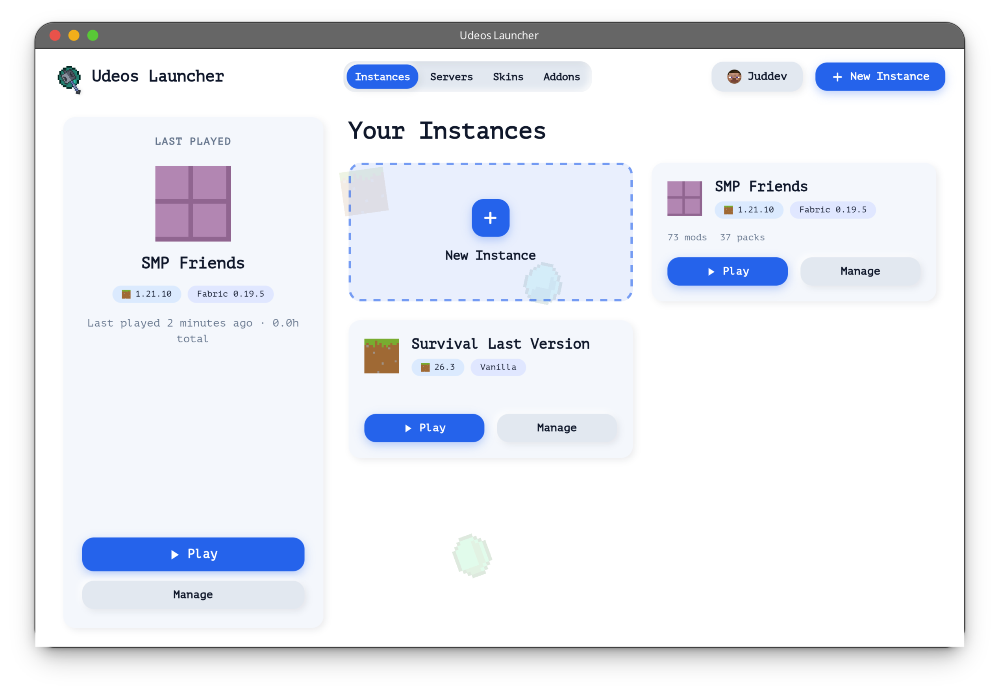
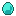
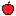
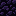

Udeos Launcher
Minecraft, no account.
Minecraft for Windows, macOS and Linux. No account needed. Free and open source.
latestMIT licenseno telemetryPortable .zip, .rpm, .tar.gz and install steps
The whole launcher, one window

What is inside, ranked
Everything you get the moment you open it. No extra installers, no accounts, no subscriptions.
Instances
Every version and modpack in its own space, with its own worlds, mods and settings.
Mod loaders
Forge, NeoForge, Fabric and Quilt, next to Vanilla.
Modrinth

Built in. Mods, resource packs, shaders and modpacks in two clicks.Skins
Drop one in or paint it in 3D.
Servers
Host friends with zero setup.
Worlds
Import, back up and browse.
Ask AI
Find mods that fit your idea.
No account. Pick a nickname and play. Java included. Downloaded on first play. Nicknames. Keep several, each with its own theme, language and skins. Themes. Light or dark. Languages. English or Spanish. Per instance. Name, icon, memory, Java path and extra JVM arguments. Servers. Vanilla, with mods or from a modpack, with backups and whitelist. Addons. Drop a .jar or pack in by hand and it works too.
Open source.
MIT license. No ads. No telemetry. Go and TypeScript.
The whole launcher is public. Read it, audit it, fork it, or fix the thing that bugs you and send it back. Issues and pull requests are welcome.
Questions you might have
Click a question to open it.
What's an instance?
An instance is a separate copy of the game: one Minecraft version, one loader (or Vanilla) and its own folder with worlds, mods, resource packs, shaders, screenshots and settings. Your 1.21 survival world and your 1.20.1 modpack never touch each other.
Game files like libraries, assets and Java are shared, so a second instance of the same version downloads almost nothing. Each instance can also have its own memory, Java path and JVM arguments.
How do addons work?
The Addons page searches Modrinth for mods, resource packs, shaders, data packs and modpacks.
- Add shows only the instances the addon fits (right version and loader). Pick one and it installs, required dependencies included.
- From an instance's own Mods tab, Add from Modrinth installs straight into that instance.
- A modpack can become a brand new instance in one click.
- Files you add by hand (drop a
.jaror pack) work too.
How do I run a server, and what are the options?
Go to Servers, then create one: Vanilla, With mods (Fabric, Forge or NeoForge) or From a modpack. Press Start and the launcher downloads and sets up everything.
- Who can join: Udeos players (default, skins work), Anyone, or Microsoft accounts.
- Internet: Relay mode (default) works without touching your router. Router mode opens the port with UPnP. Friends on the same Wi-Fi use your LAN address.
- Tabs: Console, Players (whitelist, ops, bans), Backups, Mods, Datapacks and Settings (
server.properties, memory).
Creating a server means accepting Mojang's EULA. Quilt servers aren't supported yet; most Quilt mods run on a Fabric server.

How do skins work?
On the Skins page, drop a .png you downloaded or click New skin to paint one on a 3D model. Pick Classic (Steve, 4px arms) or Slim (Alex, 3px arms); the launcher guesses the right one on import.
Click a skin in your library to wear it. It is used by every instance from the next Play, and it shows in singleplayer and on Udeos servers. Each nickname has its own skin library.
Can I personalize the launcher?
- Theme: light or dark.
- Language: English or Spanish.
- Nicknames: keep several. Each one remembers its own theme, language and skins.
- Per instance: name, icon, memory, Java path and extra JVM arguments.

Where are my instance folders?
Everything lives in one folder. Each instance is in instances/<id>/.minecraft inside it:
%AppData%\UdeosLauncher\instances~/Library/Application Support/UdeosLauncher/instances~/.config/UdeosLauncher/instancesThe easiest way is the Open folder button on an instance's page. Set the UDEOS_HOME environment variable to keep everything somewhere else.